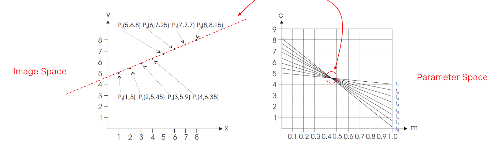
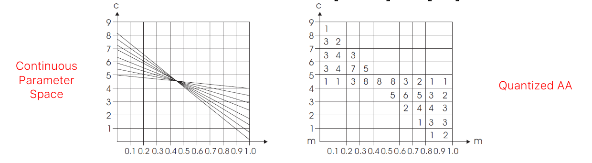
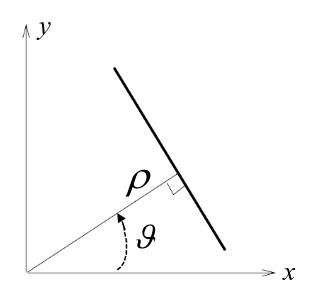

Template matching
The model image is slid across the target image to be compared at each position to an equally sized window by means of a suitable (dis)similarity function
Compute the dissimilarity
Different approaches:
- Compute the pixel-wise intensity difference: Not invariant to intensity changes
- Compute the sum of absolute distances: Not invariant to intensity changes
- normalize cross-correlation: Invariant to linear intensity changes
- Zero-Mean Normalized Cross-Correlation: Like NCC, but we subtract the mean before compute the similarity. Invariant to all intensity changes.
Fast template matching
Template matching may be exceedingly slow whenever the model and/or target images have a large size (i.e. computational complexity is O(M×N×W×H)). A popular approach is to deploy an image pyramid:
- Smoothing and sub-sampling
- Full search at top level and then local refinements traversing back the pyramid down to the original image
Shape-based Matching
It's an edge-based template matching approach: first we find the edge and their direction in the model image, then we compare them in the target image (scrolling like in the template approach) and we compute the edge detection only in the point corresponding to the edge in the reference image. The similarity function spans the interval [-1; 1]. In order to be invariant to intensity changes, we can use the absolute value of the cosine.
The Hough Transform
The Hough Transform (HT) enables to detect objects having a known shape that can be expressed by an equation (e.g. lines, circles, ellipses...) based on projection of the input data into a suitable space referred to as parameter or Hough space. The HT works better after an edge detection process. Normally, when searching for a line equation, we fix the m and c parameters and search for the x and y values (line equation: ) however, we can also fix the x and y values and search for the lines passing through that particular point. We can build a "parameter space" where we can compute the equation in terms of c and m (), repeat the process for all the points and choose the m and c with the highest number of intersections.

To make it work in practice, the parameter space needs to be quantized and allocated as a memory array, which is often refereed to as Accumulator Array (AA).

A better approach is, instead of using c and m, use the line equation . 